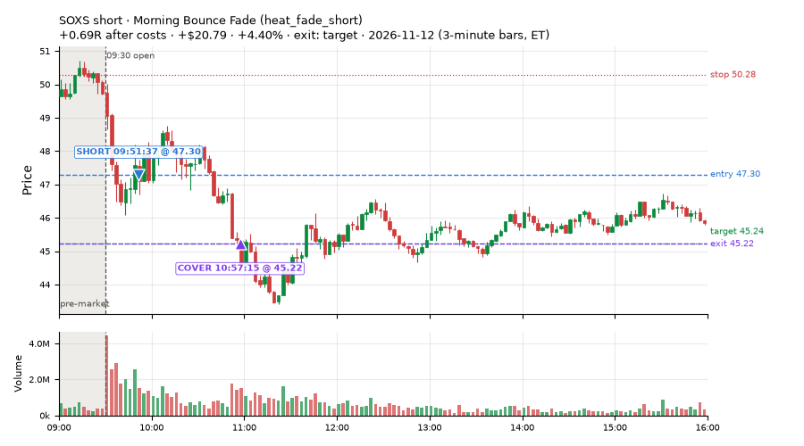
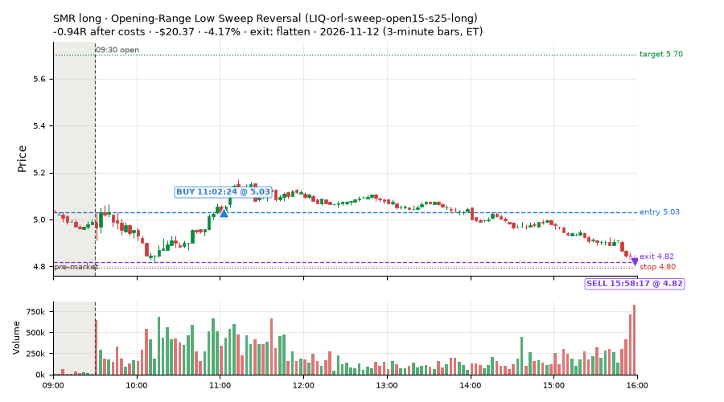
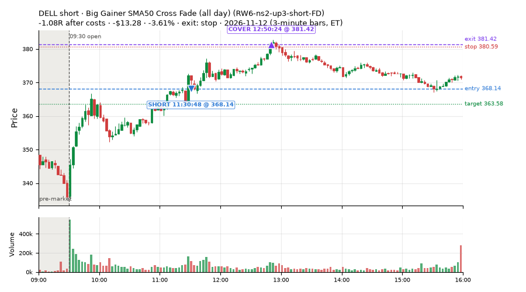
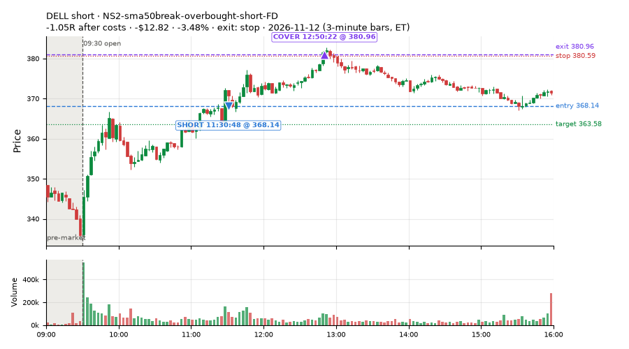
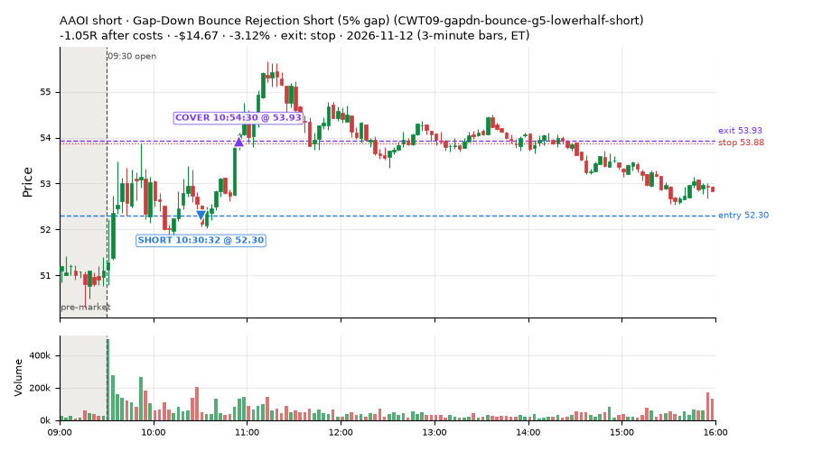
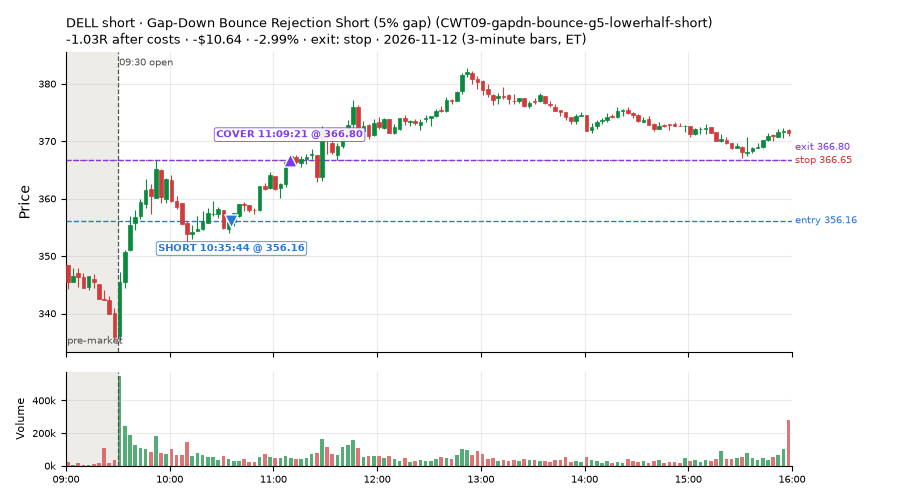

910 trades · win rate 65% · P/L $410.62
PROBATION: no live setup has passed both locked test periods. 10 owner-directed setups added 2026-10-08 (MarcoFlow top 5 + 5 new), untested live. RW6G1 (RW6 + VWAP band guard) added 2026-10-09, probation.

| Symbol | Setup | Side | In | Out | Entry | Exit | Exit reason | % gained | P/L |
|---|---|---|---|---|---|---|---|---|---|
| SOXS | Morning Bounce Fade (heat_fade_short) | short | 09:51 | 10:57 | 47.30 | 45.22 | target | +4.40% | $20.79 |
| SOXS | Big Loser VWAP Reclaim Fade (all day) (NS3-failed-vwap-reclaim-short-FD) | short | 09:51 | 10:57 | 47.30 | 45.24 | target | +4.36% | $20.63 |
| SOXS | RW4-ns3-adv150-short-FD | short | 09:51 | 10:57 | 47.28 | 45.24 | target | +4.31% | $20.38 |
| Symbol | Setup | Side | In | Out | Entry | Exit | Exit reason | % lost | P/L |
|---|---|---|---|---|---|---|---|---|---|
| SMR | LIQ-orl-sweep-open15-s25-long | long | 11:02 | 15:58 | 5.03 | 4.82 | flatten | -4.17% | $-20.37 |
| DELL | RW6-ns2-up3-short-FD | short | 11:30 | 12:50 | 368.14 | 381.42 | stop | -3.61% | $-13.28 |
| DELL | NS2-sma50break-overbought-short-FD | short | 11:30 | 12:50 | 368.14 | 380.96 | stop | -3.48% | $-12.82 |
| AAOI | CWT09-gapdn-bounce-g5-lowerhalf-short | short | 10:30 | 10:54 | 52.30 | 53.93 | stop | -3.12% | $-14.67 |
| DELL | CWT09-gapdn-bounce-g5-lowerhalf-short | short | 10:35 | 11:09 | 356.16 | 366.80 | stop | -2.99% | $-10.64 |






Signal to fill: median 2s, 90th percentile 5s (910 trades). Bars close each minute; the order follows the bar close.
Best excursion (MFE): median 0.42R; worst (MAE) median 0.54R. 28% of trades never got +0.25R in our favour; 3 reached +1R and still closed at or below 0.
| Symbol | Setup | Best R | Worst R | Closed R |
|---|---|---|---|---|
| HYMC | CWT09-gapdn-vwaploss-g5-short | +5.04 | -1.19 | -1.52 |
| SHOP | CWT12-coil-k6-long | +1.31 | -1.05 | -1.07 |
| GPN | CWT12-coil-k4-long | +0.42 | -5.08 | -1.87 |
| KVYO | CWT12-coil-k6-long | +1.48 | -0.76 | -0.57 |
| IWO | LIQ-orl-sweep-open15-s25-long | +0.85 | -1.07 | -1.14 |
| Entry time | Trades | Win | Avg R | P/L |
|---|---|---|---|---|
| 09:50-10:30 | 391 | 71% | -0.03 | $187.13 |
| 10:30-11:30 | 368 | 65% | +0.01 | $280.30 |
| 11:30-13:00 | 80 | 48% | -0.20 | $-1.91 |
| 13:00-14:00 | 30 | 40% | -0.43 | $-54.90 |
| 14:00-16:00 | 41 | 54% | -0.16 | $0.00 |
| Setup | Trades | Win | Avg R after costs | Adj R (net of SPY) | Avg R ex-market (all sessions) | P/L |
|---|---|---|---|---|---|---|
| Gap-Down Bounce Rejection Short (5% gap) (CWT09-gapdn-bounce-g5-lowerhalf-short) | 17.0 | 6% | -1.06 | -0.90 | -0.28 (beta -1.20, n 124) | $-121.79 |
| Gap-Down VWAP Loss Short (5% gap) (CWT09-gapdn-vwaploss-g5-short) | 15.0 | 0% | -1.17 | -1.02 | -0.28 (beta -3.19, n 96) | $-104.01 |
| Coil Under the High (4 bars) (CWT12-coil-k4-long) | 59.0 | 54% | -0.23 | -0.26 | -0.05 (beta +0.77, n 413) | $-32.90 |
| Coil Under the High (6 bars) (CWT12-coil-k6-long) | 8.0 | 25% | -0.59 | -0.82 | -0.10 (beta +1.50, n 155) | $3.56 |
| Stretched Above VWAP Fade (CWT13-vwapstretch-z05-short) | 3.0 | 67% | -0.13 | -0.45 | -0.03 (beta -0.52, n 137) | $-0.58 |
| Failed Opening-Range-Low Break Long (0.05 ATR) [fill] (CWT14-failbrk-orl-p05-long) | 159.0 | 62% | -0.17 | -0.25 | -0.10 (beta +0.76, n 904) | $-61.18 |
| Failed Opening-Range-Low Break Long (0.05 ATR, low volume) [fill] (CWT14-failbrk-orl-p05-lowvol-long) | 130.0 | 72% | -0.07 | -0.28 | -0.06 (beta +0.69, n 751) | $-4.87 |
| Failed Opening-Range-Low Break Long (0.1 ATR) [fill] (CWT14-failbrk-orl-p10-long) | 21.0 | 71% | -0.06 | -0.37 | -0.10 (beta +0.93, n 426) | $-0.84 |
| Failed Opening-Range-Low Break Long (low volume) (CWT14-failbrk-orl-p10-lowvol-long) | 47.0 | 68% | -0.09 | -0.39 | -0.06 (beta +0.89, n 483) | $7.41 |
| Failed Prior-Day-High Break Short (0.05 ATR, low volume) [fill] (CWT14-failbrk-pdh-p05-lowvol-short) | 36.0 | 58% | -0.28 | -0.17 | -0.13 (beta -1.00, n 343) | $-27.28 |
| Failed Prior-Day-High Break Short (low volume) (CWT14-failbrk-pdh-p10-lowvol-short) | 29.0 | 59% | -0.26 | +0.06 | -0.17 (beta -0.94, n 189) | $-6.48 |
| Failed Prior-Day-High Break Short (0.1 ATR) [fill] (CWT14-failbrk-pdh-p10-short) | 37.0 | 62% | -0.20 | +0.03 | -0.17 (beta -1.14, n 312) | $-4.88 |
| Failed Prior-Day-Low Break Long (shallow) (CWT14-failbrk-pdl-p05-long) | 33.0 | 58% | -0.21 | -0.36 | -0.09 (beta +0.59, n 293) | $4.61 |
| Failed Prior-Day-Low Break Long (0.05 ATR, low volume) [fill] (CWT14-failbrk-pdl-p05-lowvol-long) | 45.0 | 80% | +0.23 | -0.19 | -0.09 (beta +0.99, n 261) | $81.65 |
| Opening-Range Low Sweep Reversal (LIQ-orl-sweep-open15-s25-long) | 27.0 | 15% | -0.55 | -0.28 | -0.13 (beta +0.12, n 190) | $-85.56 |
| MF1-945-flowsell-vwapup-FD | 5.0 | 100% | +1.18 | +0.20 | -0.18 (beta -2.35, n 87) | $9.34 |
| Early Sellers into a Pop (all day) (MF3-open-flowsell-rsi5hi-FD) | 7.0 | 86% | +0.37 | +0.03 | -0.09 (beta -1.40, n 115) | $-0.85 |
| MF5-flowsell-vwapup-rsi5hi-FD | 3.0 | 100% | +0.64 | +0.26 | +0.03 (beta -1.67, n 67) | $6.07 |
| NS2-sma50break-overbought-short-FD | 73.0 | 88% | +0.57 | +0.28 | -0.06 (beta -1.22, n 198) | $296.37 |
| Big Loser VWAP Reclaim Fade (all day) (NS3-failed-vwap-reclaim-short-FD) | 2.0 | 100% | +0.52 | +0.46 | -0.34 (beta -0.75, n 73) | $27.56 |
| NS5-sma50-flush-oversold-long-FD | 4.0 | 50% | -0.16 | +0.11 | -0.10 (beta +1.12, n 30) | $1.49 |
| RW2-exhaustion-noon-adv150-short-FD | 9.0 | 33% | -0.48 | -0.45 | -0.39 (beta -1.11, n 292) | $-12.64 |
| RW4-ns3-adv150-short-FD | 2.0 | 100% | +0.51 | +0.45 | -0.22 (beta -0.44, n 61) | $27.31 |
| Big Gainer SMA50 Cross Fade (all day) (RW6-ns2-up3-short-FD) | 76.0 | 87% | +0.50 | +0.28 | -0.01 (beta -1.24, n 144) | $347.29 |
| RW6G1-ns2-up3-vwap2sd-short-FD | 5.0 | 80% | +0.42 | +0.16 | +0.11 (beta -0.42, n 32) | $17.10 |
| ST2-slope20up-long-am-t05s1-FD | 12.0 | 58% | -0.16 | -0.01 | -0.01 (beta +0.83, n 206) | $5.20 |
| ST4-emadn-long-am-t1s05-FD | 1.0 | 0% | -1.14 | -0.74 | +0.62 (beta +2.53, n 23) | $-2.30 |
| Midday Gap-Up Dip Buy (heat_fade_long) failed Apr-Jun holdout: -0.138R/trade over 1043 trades | 4.0 | 75% | +0.35 | +0.64 | +0.24 (beta +1.80, n 102) | $8.41 |
| heat_fade_long-FD | 11.0 | 55% | +0.08 | +0.11 | -0.18 (beta +1.28, n 121) | $13.03 |
| Morning Bounce Fade (heat_fade_short) failed Apr-Jun holdout: -0.015R/trade over 1420 trades | 17.0 | 53% | -0.09 | +0.02 | -0.20 (beta -1.02, n 230) | $21.66 |
| Morning Bounce Fade (all day) (heat_fade_short-FD) | 13.0 | 62% | +0.05 | -0.08 | -0.24 (beta -1.52, n 383) | $-1.27 |
Market direction (SPY, beta 1) accounted for $318.13 of today's $410.62; the rest ($92.49) came from the setups themselves. Avg R net of SPY: -0.16 (incl. a hedge leg's cost; report only).
33 setups live today. Today: 2729 signals, 910 taken, 169 lost because another setup held the symbol (6%). Since 2026-10-21 (17 sessions): 21428 signals, 7283 taken, 1063 lost to other setups (5%). Peak open positions today 300 of 300 slots. Earnings blackout removed 576 symbols before scanning.
Simulated playing time (not live): 14094 what-if trades of signals not taken, avg -0.02R, 56% winners; of them 1062 lost to another setup (avg -0.03R).
Crowded out: NS2-sma50break-overbought-short · Starved: MF1-945-flowsell-vwapup-FD, heat_fade_long, heat_fade_long-FD, heat_fade_short-FD
| Prio | Setup | Today sig / taken | Sessions | Signals / taken / trades | Taken/day | Expected/day | Lost to other setups | Lost to (setup n) | Top skip reasons | SIMULATED: not-taken n / avg R / win | Verdict |
|---|---|---|---|---|---|---|---|---|---|---|---|
| 1 | ST1-ordn-long-pm-t05s1-FD ST1-ordn-long-pm-t05s1-FD | 0 / 0 | 17 | 46 / 34 / 34 | 2.00 | 3.49 | 0 | – | spread / quote / size 10, broker rejected 1, other 1 | 12 / -0.35R / 33% | slow 10.0 entries/week; ~6 weeks to 60 trades |
| 2 | Big Gainer SMA50 Cross Fade (all day) RW6-ns2-up3-short-FD | 134 / 76 | 17 | 301 / 144 / 144 | 8.47 | 7.12 | 18 | RW6-ns2-up3-short-FD 8, NS2-sma50break-overbought-short-FD 8, CWT12-coil-k4-long 5 | not shortable / shorts off 58, spread / quote / size 41, symbol held by another setup 18 | 157 / +0.39R / 76% | ok 42.4 entries/week |
| 3 | NS2-sma50break-overbought-short-FD NS2-sma50break-overbought-short-FD | 124 / 73 | 17 | 424 / 198 / 198 | 11.65 | 17.08 | 14 | CWT12-coil-k4-long 9, LIQ-orl-sweep-open15-s25-long 3, CWT12-coil-k6-long 3 | spread / quote / size 59, not shortable / shorts off 56, per-setup cap 42 | 226 / +0.27R / 71% | ok 58.2 entries/week |
| 4 | Big Gainer Average Reclaim Fade NS2-sma50break-overbought-short | 103 / 0 | 17 | 211 / 8 / 8 | 0.47 | 5.74 | 123 | NS2-sma50break-overbought-short-FD 111, RW6-ns2-up3-short-FD 56, CWT12-coil-k4-long 8 | symbol held by another setup 123, spread / quote / size 48, not shortable / shorts off 19 | 203 / +0.39R / 76% | crowded-out 123 of 211 signals (58%) lost to setups already holding the symbol |
| 5 | MF1-945-flowsell-vwapup-FD MF1-945-flowsell-vwapup-FD | 20 / 5 | 17 | 311 / 87 / 87 | 5.12 | 23.94 | 5 | CWT14-failbrk-orl-p05-long 2, CWT12-coil-k4-long 2, CWT12-coil-k6-long 1 | daily loss cap 124, spread / quote / size 63, broker rejected 15 | 224 / -0.26R / 29% | starved 5.12 entries/day vs ~23.94 expected |
| 6 | ST2-slope20up-long-am-t05s1-FD ST2-slope20up-long-am-t05s1-FD | 16 / 12 | 17 | 538 / 206 / 206 | 12.12 | 24.03 | 26 | heat_fade_short-FD 10, CWT09-gapdn-bounce-g5-lowerhalf-short 6, NS3-failed-vwap-reclaim-short-FD 3 | daily loss cap 219, spread / quote / size 42, per-setup cap 37 | 329 / -0.05R / 61% | ok 60.6 entries/week |
| 7 | Midday Gap-Up Dip Buy heat_fade_long | 7 / 4 | 17 | 170 / 102 / 102 | 6.00 | 30.36 | 19 | heat_fade_long-FD 10, NS3-failed-vwap-reclaim-short-FD 3, RW4-ns3-adv150-short-FD 3 | spread / quote / size 22, symbol held by another setup 19, daily loss cap 15 | 68 / -0.20R / 46% | starved 6.00 entries/day vs ~30.36 expected |
| 8 | Opening-Range Low Sweep Reversal LIQ-orl-sweep-open15-s25-long | 39 / 27 | 17 | 362 / 190 / 190 | 11.18 | – | 17 | CWT14-failbrk-orl-p10-long 14, CWT14-failbrk-orl-p05-lowvol-long 14, CWT14-failbrk-orl-p10-lowvol-long 12 | per-setup cap 57, daily loss cap 45, spread / quote / size 35 | 172 / -0.03R / 45% | ok 55.9 entries/week |
| 9 | RW2-exhaustion-noon-adv150-short-FD RW2-exhaustion-noon-adv150-short-FD | 27 / 9 | 17 | 888 / 292 / 292 | 17.18 | 50.34 | 14 | CWT12-coil-k4-long 5, CWT12-coil-k6-long 3, NS3-failed-vwap-reclaim-short-FD 3 | daily loss cap 377, not shortable / shorts off 88, spread / quote / size 74 | 596 / -0.05R / 51% | ok 85.9 entries/week |
| 10 | heat_fade_long-FD heat_fade_long-FD | 22 / 11 | 17 | 353 / 121 / 121 | 7.12 | 51.74 | 55 | heat_fade_long 46, heat_fade_short 4, heat_fade_short-FD 3 | daily loss cap 120, spread / quote / size 57, symbol held by another setup 55 | 232 / -0.12R / 46% | starved 7.12 entries/day vs ~51.74 expected |
| 11 | Failed Opening-Range-Low Break Long (low volume) CWT14-failbrk-orl-p10-lowvol-long | 125 / 47 | 17 | 919 / 483 / 483 | 28.41 | – | 8 | CWT14-failbrk-pdh-p05-lowvol-short 4, CWT14-failbrk-orl-p05-long 3, CWT14-failbrk-pdh-p10-short 2 | spread / quote / size 168, daily loss cap 145, slots full 50 | 432 / +0.12R / 61% | ok 142.1 entries/week |
| 12 | Failed Opening-Range-Low Break Long (0.1 ATR) [fill] CWT14-failbrk-orl-p10-long | 152 / 21 | 17 | 1091 / 426 / 426 | 25.06 | – | 14 | CWT14-failbrk-orl-p05-lowvol-long 10, CWT14-failbrk-orl-p05-long 10, CWT14-failbrk-orl-p10-lowvol-long 9 | daily loss cap 378, spread / quote / size 168, per-setup cap 53 | 660 / +0.04R / 62% | ok 125.3 entries/week |
| 13 | Morning Bounce Fade heat_fade_short | 29 / 17 | 17 | 552 / 230 / 230 | 13.53 | 31.76 | 1 | CWT14-failbrk-pdl-p05-lowvol-long 1 | spread / quote / size 128, per-setup cap 110, daily loss cap 59 | 322 / -0.24R / 38% | ok 67.6 entries/week |
| 14 | Failed Opening-Range-Low Break Long (0.05 ATR, low volume) [fill] CWT14-failbrk-orl-p05-lowvol-long | 268 / 130 | 17 | 2066 / 751 / 751 | 44.18 | – | 30 | CWT14-failbrk-orl-p10-lowvol-long 9, CWT14-failbrk-orl-p10-long 8, CWT14-failbrk-orl-p05-long 7 | daily loss cap 644, spread / quote / size 295, per-setup cap 198 | 1310 / -0.01R / 62% | ok 220.9 entries/week |
| 15 | Morning Bounce Fade (all day) heat_fade_short-FD | 94 / 13 | 17 | 1307 / 383 / 383 | 22.53 | 173.78 | 285 | heat_fade_short 230, LIQ-orl-sweep-open15-s25-long 17, CWT14-failbrk-orl-p05-long 9 | daily loss cap 286, symbol held by another setup 285, spread / quote / size 189 | 924 / -0.08R / 47% | starved 22.53 entries/day vs ~173.78 expected |
| 16 | Failed Opening-Range-Low Break Long (0.05 ATR) [fill] CWT14-failbrk-orl-p05-long | 352 / 159 | 17 | 2819 / 904 / 904 | 53.18 | – | 171 | CWT14-failbrk-orl-p10-lowvol-long 137, CWT14-failbrk-orl-p10-long 136, CWT14-failbrk-orl-p05-lowvol-long 134 | daily loss cap 832, spread / quote / size 400, per-setup cap 325 | 1910 / -0.04R / 62% | ok 265.9 entries/week |
| 17 | Gap-Down Bounce Rejection Short (5% gap) CWT09-gapdn-bounce-g5-lowerhalf-short | 149 / 17 | 17 | 792 / 124 / 124 | 7.29 | – | 11 | CWT14-failbrk-pdl-p05-lowvol-long 4, CWT12-coil-k4-long 3, CWT14-failbrk-pdl-p05-long 3 | not shortable / shorts off 493, spread / quote / size 73, per-setup cap 32 | 664 / -0.02R / 49% | ok 36.5 entries/week |
| 18 | Failed Prior-Day-High Break Short (0.05 ATR, low volume) [fill] CWT14-failbrk-pdh-p05-lowvol-short | 151 / 36 | 16 | 1014 / 343 / 343 | 21.44 | – | 10 | CWT14-failbrk-orl-p10-long 4, CWT14-failbrk-orl-p10-lowvol-long 3, CWT14-failbrk-orl-p05-long 3 | daily loss cap 387, spread / quote / size 215, not shortable / shorts off 42 | 670 / -0.03R / 64% | ok 107.2 entries/week |
| 19 | Failed Prior-Day-High Break Short (low volume) CWT14-failbrk-pdh-p10-lowvol-short | 74 / 29 | 16 | 451 / 189 / 189 | 11.81 | – | 6 | CWT14-failbrk-orl-p10-long 3, CWT14-failbrk-orl-p05-long 3, CWT14-failbrk-orl-p05-lowvol-long 2 | spread / quote / size 127, daily loss cap 100, not shortable / shorts off 17 | 261 / -0.07R / 62% | ok 59.1 entries/week |
| 20 | Failed Prior-Day-High Break Short (0.1 ATR) [fill] CWT14-failbrk-pdh-p10-short | 93 / 37 | 15 | 698 / 312 / 312 | 20.80 | – | 12 | CWT14-failbrk-orl-p10-long 5, CWT14-failbrk-pdh-p05-lowvol-short 3, CWT14-failbrk-pdh-p10-lowvol-short 3 | spread / quote / size 206, daily loss cap 103, not shortable / shorts off 41 | 385 / -0.10R / 60% | ok 104.0 entries/week |
| 21 | Stretched Above VWAP Fade CWT13-vwapstretch-z05-short | 6 / 3 | 15 | 327 / 137 / 137 | 9.13 | – | 3 | LIQ-orl-sweep-open15-s25-long 1, CWT12-coil-k4-long 1, CWT12-coil-k6-long 1 | daily loss cap 131, spread / quote / size 24, not shortable / shorts off 22 | 190 / -0.09R / 47% | ok 45.7 entries/week |
| 22 | Gap-Down VWAP Loss Short (5% gap) CWT09-gapdn-vwaploss-g5-short | 120 / 15 | 14 | 868 / 96 / 96 | 6.86 | – | 9 | CWT14-failbrk-pdl-p05-long 3, CWT14-failbrk-pdl-p05-lowvol-long 3, CWT14-failbrk-orl-p05-lowvol-long 2 | not shortable / shorts off 582, spread / quote / size 78, per-setup cap 54 | 762 / -0.08R / 40% | ok 34.3 entries/week |
| 23 | Coil Under the High (6 bars) CWT12-coil-k6-long | 30 / 8 | 13 | 559 / 155 / 155 | 11.92 | – | 24 | CWT14-failbrk-pdh-p10-short 6, heat_fade_short 6, RW2-exhaustion-noon-adv150-short-FD 4 | daily loss cap 197, spread / quote / size 123, broker rejected 54 | 404 / +0.16R / 47% | ok 59.6 entries/week |
| 24 | Coil Under the High (4 bars) CWT12-coil-k4-long | 110 / 59 | 11 | 1253 / 413 / 413 | 37.55 | – | 48 | RW2-exhaustion-noon-adv150-short-FD 15, CWT14-failbrk-pdh-p05-lowvol-short 10, CWT14-failbrk-pdh-p10-short 9 | per-setup cap 493, broker rejected 154, spread / quote / size 117 | 838 / +0.01R / 69% | ok 187.7 entries/week |
| 25 | Failed Prior-Day-Low Break Long (shallow) CWT14-failbrk-pdl-p05-long | 232 / 33 | 10 | 1096 / 293 / 293 | 29.30 | – | 6 | CWT14-failbrk-orl-p10-lowvol-long 3, CWT14-failbrk-orl-p10-long 3, CWT14-failbrk-orl-p05-lowvol-long 3 | daily loss cap 618, spread / quote / size 162, broker rejected 13 | 797 / -0.06R / 62% | ok 146.5 entries/week |
| 26 | Failed Prior-Day-Low Break Long (0.05 ATR, low volume) [fill] CWT14-failbrk-pdl-p05-lowvol-long | 169 / 45 | 10 | 765 / 261 / 261 | 26.10 | – | 24 | CWT14-failbrk-orl-p05-lowvol-long 20, CWT14-failbrk-orl-p05-long 13, CWT14-failbrk-orl-p10-long 12 | daily loss cap 294, spread / quote / size 160, broker rejected 26 | 500 / -0.07R / 62% | ok 130.5 entries/week |
| 27 | Big Loser VWAP Reclaim Fade (all day) NS3-failed-vwap-reclaim-short-FD | 26 / 2 | 9 | 417 / 73 / 73 | 8.11 | 22.02 | 43 | NS3-failed-vwap-reclaim-short-FD 11, RW4-ns3-adv150-short-FD 10, heat_fade_long 10 | daily loss cap 180, not shortable / shorts off 73, symbol held by another setup 43 | 344 / -0.09R / 47% | ok 40.6 entries/week |
| 28 | RW4-ns3-adv150-short-FD RW4-ns3-adv150-short-FD | 18 / 2 | 9 | 305 / 61 / 61 | 6.78 | 17.34 | 55 | NS3-failed-vwap-reclaim-short-FD 26, RW4-ns3-adv150-short-FD 24, heat_fade_long 11 | daily loss cap 106, symbol held by another setup 55, not shortable / shorts off 38 | 244 / -0.15R / 43% | ok 33.9 entries/week |
| 29 | Early Sellers into a Pop (all day) MF3-open-flowsell-rsi5hi-FD | 14 / 7 | 8 | 226 / 115 / 115 | 14.38 | 24.16 | 3 | ST2-slope20up-long-am-t05s1-FD 1, heat_fade_long 1, CWT14-failbrk-orl-p05-long 1 | daily loss cap 43, broker rejected 27, not shortable / shorts off 18 | 111 / -0.05R / 47% | ok 71.9 entries/week |
| 30 | MF5-flowsell-vwapup-rsi5hi-FD MF5-flowsell-vwapup-rsi5hi-FD | 9 / 3 | 8 | 144 / 67 / 67 | 8.38 | 15.47 | 1 | heat_fade_short 1, MF1-945-flowsell-vwapup-FD 1, MF3-open-flowsell-rsi5hi-FD 1 | broker rejected 33, daily loss cap 29, spread / quote / size 9 | 77 / -0.14R / 44% | ok 41.9 entries/week |
| 31 | NS5-sma50-flush-oversold-long-FD NS5-sma50-flush-oversold-long-FD | 7 / 4 | 7 | 62 / 30 / 30 | 4.29 | 6.32 | 4 | NS3-failed-vwap-reclaim-short-FD 2, RW4-ns3-adv150-short-FD 2, ST4-emadn-long-am-t1s05-FD 1 | daily loss cap 14, spread / quote / size 7, broker rejected 6 | 32 / +0.15R / 59% | ok 21.4 entries/week |
| 32 | ST4-emadn-long-am-t1s05-FD ST4-emadn-long-am-t1s05-FD | 2 / 1 | 7 | 32 / 23 / 23 | 3.29 | 2.77 | 1 | heat_fade_short-FD 1 | spread / quote / size 7, symbol held by another setup 1, broker rejected 1 | 9 / +0.55R / 56% | ok 16.4 entries/week |
| 33 | RW6G1-ns2-up3-vwap2sd-short-FD RW6G1-ns2-up3-vwap2sd-short-FD | 7 / 5 | 7 | 61 / 32 / 32 | 4.57 | 3.73 | 3 | RW6-ns2-up3-short-FD 3, NS2-sma50break-overbought-short-FD 2, RW6G1-ns2-up3-vwap2sd-short-FD 2 | not shortable / shorts off 20, broker rejected 4, symbol held by another setup 3 | 29 / +0.04R / 52% | ok 22.9 entries/week |
Every trade is attached as a CSV you can open and edit in Excel or Google Sheets. Live page: https://misiti15.github.io/MCF/live/